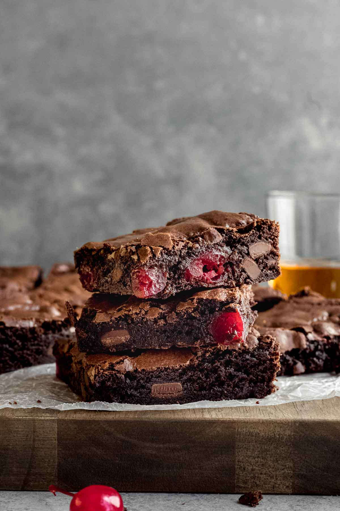

Black Forest Brownies

This delicious Dessert Recipe is inspired by black forest cake, but made into a Brownie Recipe. Turning it into a brownie dish makes it easier to take to your next bake sale, potluck, or party. It’s the perfect transportable chocolate dessert in a hurry.
Ingredients
For cherries
- 2 1/2C fresh cherries
- 1Tbsp white sugar
For brownies
- 100g 70% dark chocolate
- 113g(1 stick) unsalted butter
- 3 large eggs, room temperature
- 200g(1C) white granulated sugar
- 50g(1/4C packed) dark brown sugar
- 1 1/2tsp vanilla extract
- 130g(1C) plain all purpose flour
- 1/4tsp salt
For topping
- 3/4C whipping cream
- 100g shaved milk chocolate
Equipment
- 8 inch square baking tin
- cherry pitter
- speed peeler or vegetable peeler
Instructions
- Preheat oven to 350F fan forced. Grease and line an 8 inch square baking tin with parchment paper.
- Pit the cherries and chop into quarters. Set aside 1/2C fore the topping. Add the rest to the bowl with 1Tbsp of white sugar. Set aside to macerate for 10 minutes.
- Place the butter and chocolate in a heat proof bowl and microwave for 30 seconds at a time stirring between each until melted and smooth. Set aside.
- Place the eggs and both of the remaining sugars in a large bowl. Whisk with a handheld mixer for around 2 minutes. Until light and fluffy (or in a stand mixer with a paddle attachment for 3 to 5 minutes).
- Add the melted chocolate and butter and the vanilla and stir through with a spatula.
- Sift over the plain flour, cocoa, and salt stirring with a spatula until just combined.
- Use a fork to lightly mash the macerated cherries, then stir them through the brownie batter.
- Pour the mixture into a prepared tin and bake for around 40 to 45 minutes or until a toothpick comes out with some sticky crumbs on it.
- Let them cool completely before proceeding. You can speed this up by chilling them in the fridge.
- Whip the cream in a bowl until it can hold a soft peak, then spread over the top. Dot with remaining cherries then scatter with chocolate shavings.
Notes
- I use a standard Australian 20ml Tbsp, which is equal to 4tsp.
- For best results, you should always weigh ingredients like flour and sugar.
- Brownies are done when a toothpick comes out with a few sticky crumbs on it. They will carry-over bake in the tin.